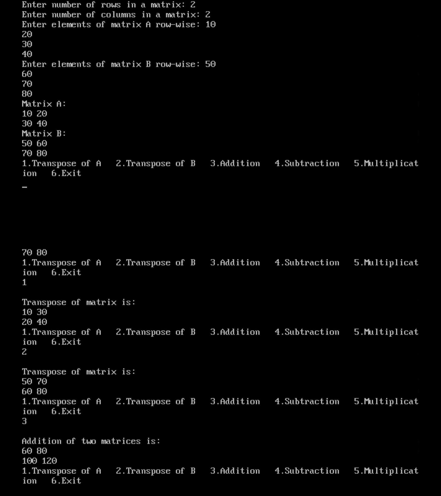

Menu driven program of 2D array
#include <stdio.h> #include <stdlib.h> #include <math.h> int a[10][10], b[10][10], c[10][10], rows, cols; void add() { int i, j; printf("\nAddition of two matrices is: \n"); for(i = 0; i < rows; i++) { for(j = 0; j < cols; j++) { c[i][j] = a[i][j] + b[i][j]; printf("%d ", c[i][j]); } printf("\n"); } } void sub() { int i, j; printf("\nSubtraction of two matrices is: \n"); for(i = 0; i < rows; i++) { for(j = 0; j < cols; j++) { c[i][j] = a[i][j] - b[i][j]; printf("%d ", c[i][j]); } printf("\n"); } } void trans(int mat[10][10]) { int i, j; printf("\nTranspose of matrix is: \n"); for(i = 0; i < rows; i++) { for(j = 0; j < cols; j++) { printf("%d ", mat[j][i]); } printf("\n"); } } void mul() { int i, j, k; if (cols != rows) { printf("Matrix multiplication is not possible: number of columns of A must be equal to number of rows of B.\n"); return; } printf("\nMultiplication of two matrices is: \n"); for(i = 0; i < rows; i++) { for(j = 0; j < cols; j++) { c[i][j] = 0; for(k = 0; k < cols; k++) { c[i][j] += a[i][k] * b[k][j]; } } } for(i = 0; i < rows; i++) { for(j = 0; j < cols; j++) { printf("%d ", c[i][j]); } printf("\n"); } } void main() { int i, j, choice; clrscr(); printf("Enter number of rows in a matrix: "); scanf("%d", &rows); printf("Enter number of columns in a matrix: "); scanf("%d", &cols); printf("Enter elements of matrix A row-wise: "); for(i = 0; i < rows; i++) { for(j = 0; j < cols; j++) { scanf("%d", &a[i][j]); } } printf("Enter elements of matrix B row-wise: "); for(i = 0; i < rows; i++) { for(j = 0; j < cols; j++) { scanf("%d", &b[i][j]); } } printf("Matrix A:\n"); for(i = 0; i < rows; i++) { for(j = 0; j < cols; j++) { printf("%d ", a[i][j]); } printf("\n"); } printf("Matrix B:\n"); for(i = 0; i < rows; i++) { for(j = 0; j < cols; j++) { printf("%d ", b[i][j]); } printf("\n"); } while(1) { printf("1.Transpose of A 2.Transpose of B 3.Addition 4.Subtraction 5.Multiplication 6.Exit\n"); scanf("%d", &choice); switch(choice) { case 1: trans(a); break; case 2: trans(b); break; case 3: add(); break; case 4: sub(); break; case 5: mul(); break; case 6: exit(0); break; default: printf("Invalid input. Please try again.\n"); break; } } getch(); }
Output
Code
